گالری تصاویر مرکز
 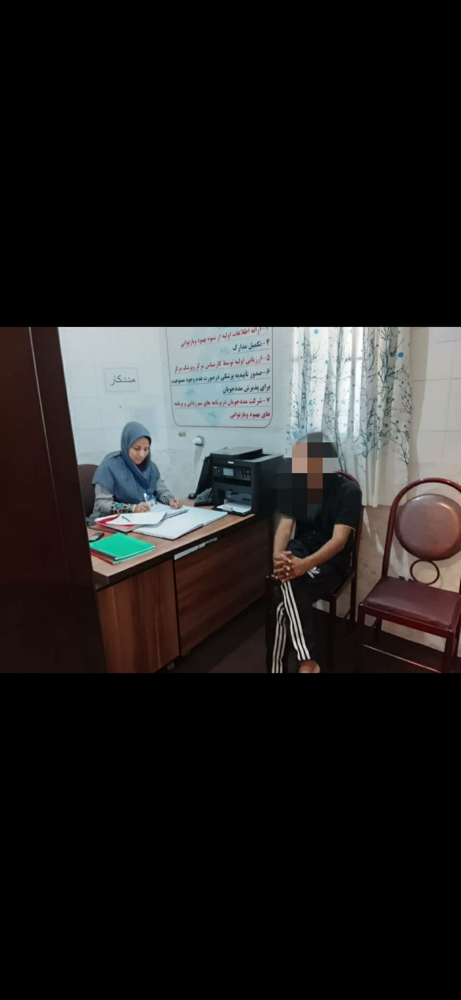
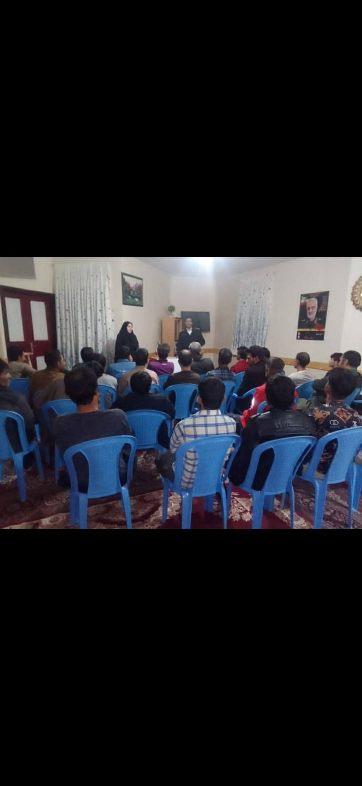
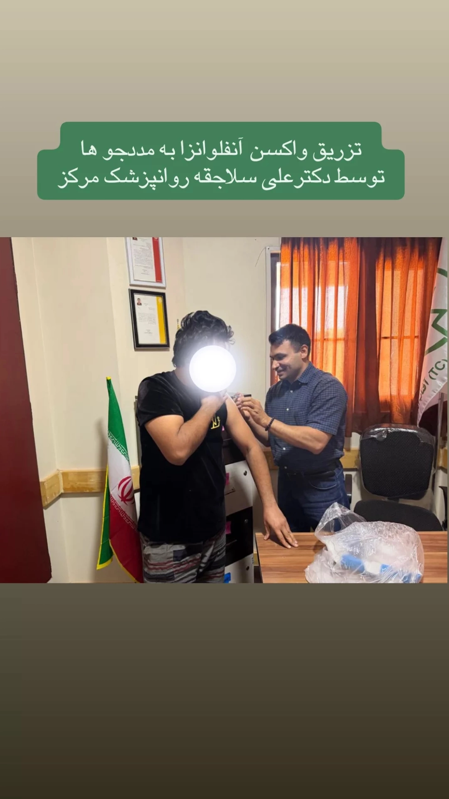
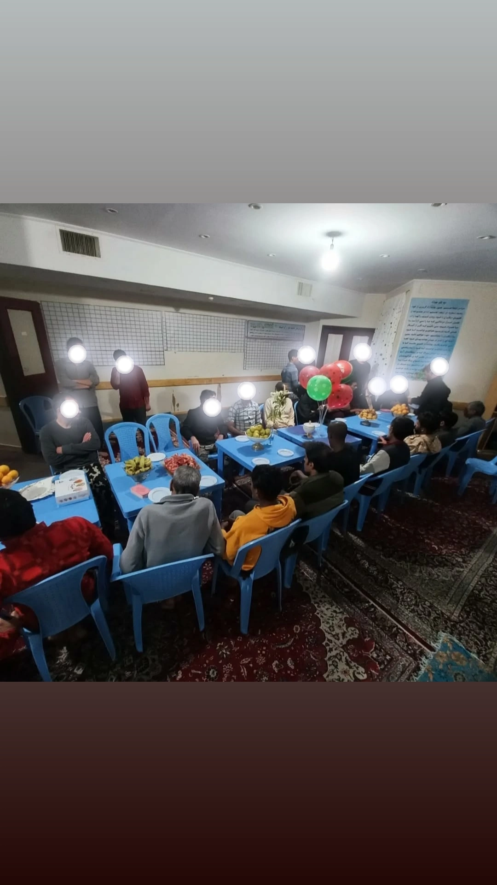
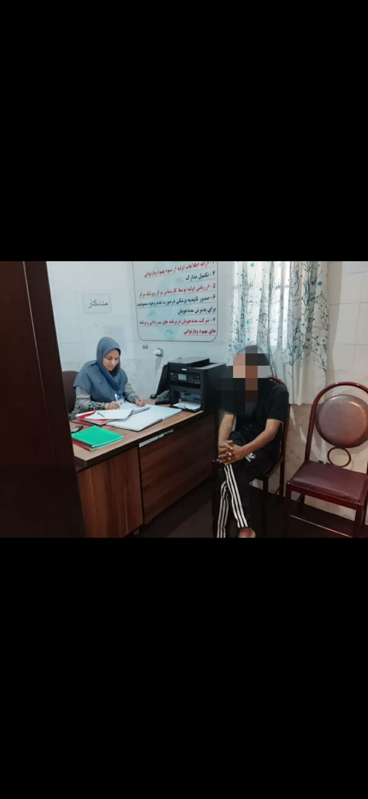
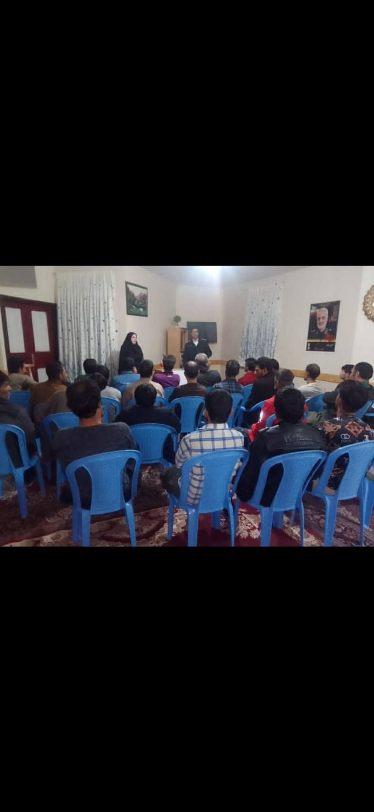
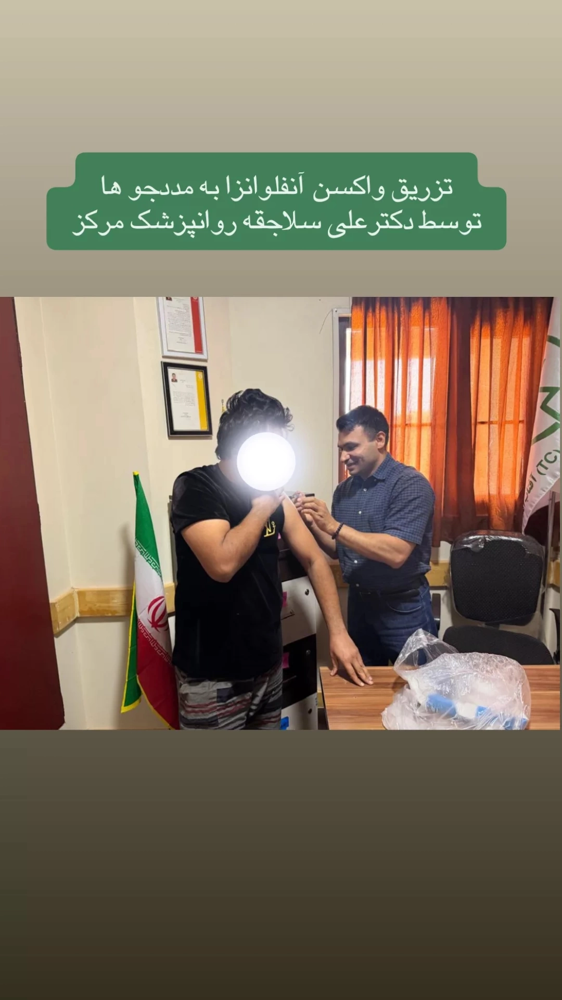
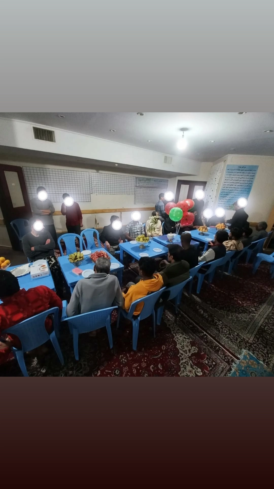

مرکز اقامتی درمان اعتیاد تیسی بم، متخصصترین و استانداردترین مرکز درمان اعتیاد بر پایه مدل جهانی Therapeutic Community (TC) در منطقه بروات است. این روش یکی از موفقترین و علمیترین مدلهای درمان پایدار اعتیاد در جهان میباشد.
این مرکز با نظارت مستقیم:
✔ روانپزشک: دکتر علی سلاجقه
✔ سازمان بهزیستی
✔ روانشناس بالینی، مددکار و تیم درمان
فعالیت میکند.
در روش تیسی، هدف فقط ترک مصرف مواد نیست، بلکه تغییر شخصیت، اصلاح رفتار، تقویت مهارتهای زندگی، کار تیمی، مسئولیتپذیری و بازگشت سالم به جامعه است.
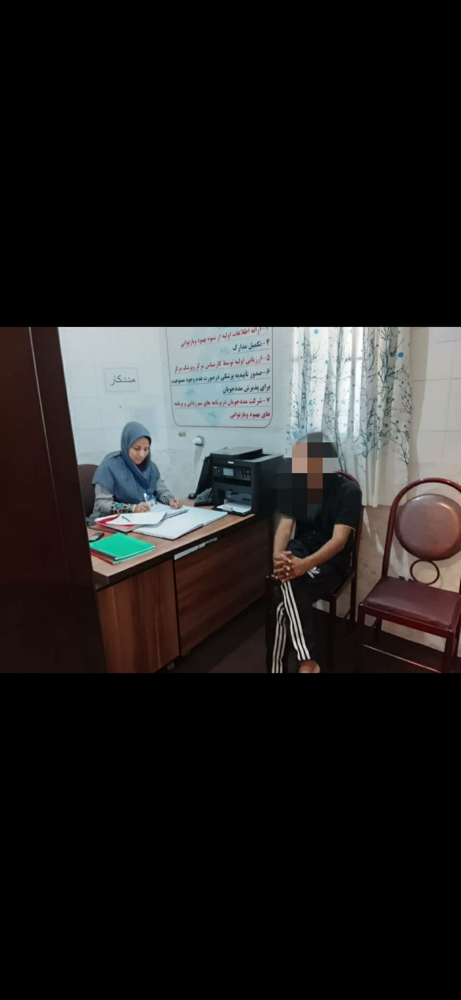
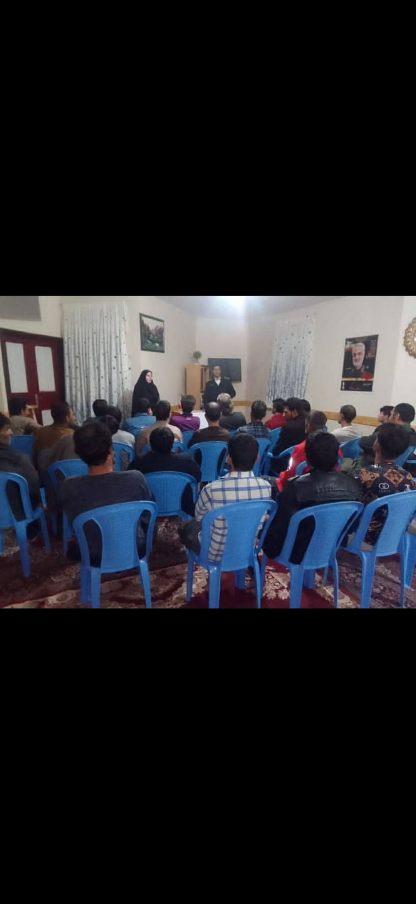
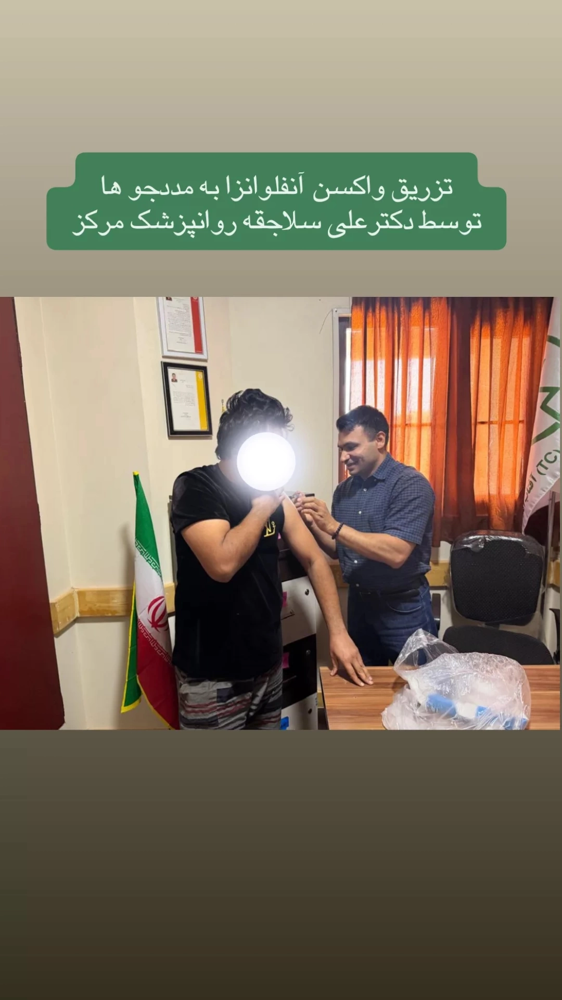
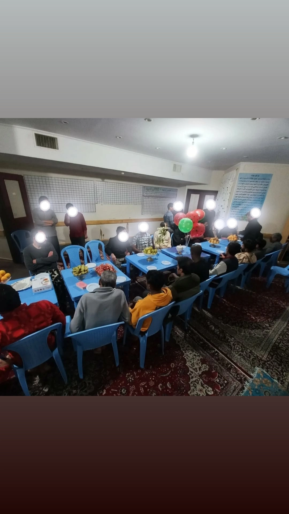